| 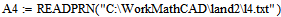 | Ввод точек | |
| 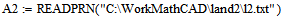 | 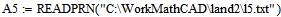 | |
| 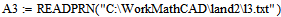 | ||
| 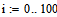 | Ввод
дополнительных точек с нулевой аппликатой по краям моделируемого
ландшафта. Данный момент не является принципиальным. |
|
| 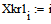 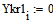 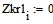 |
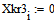
 |
|
| 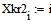 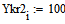 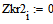 | 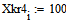 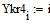 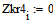 |
| 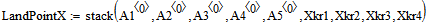 | Покоординатное формирование единых массивов точек |
| 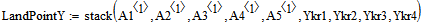 | |
| 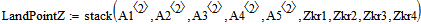 | |
| 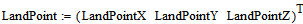 | Формирование трехстрочной матрицы массива точек |
| Поскольку у нас строится поверхность вида , то и регрессия (полиномиальная) производится именно для такого случая | |
| 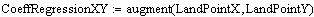 | 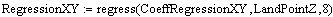 |
| 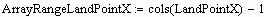 | |
| 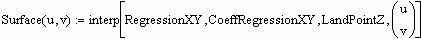 | Результат выполнения регрессии. Построена поверхность вида |
| 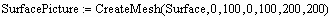 | Визуализация графика поверхности, полученной в результате регрессии |
| 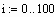 | 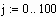 | Построение на заданном сегменте поверхности равномерной сетки |
| 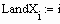 | 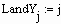 | 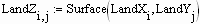 |
|
В дальнейшем, при расчете
траектории "Лисы" используются значения производных
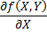, 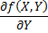. Поэтому, на равномерной сетке вычисляются значения первых производных 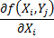 и 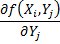 |
|
| 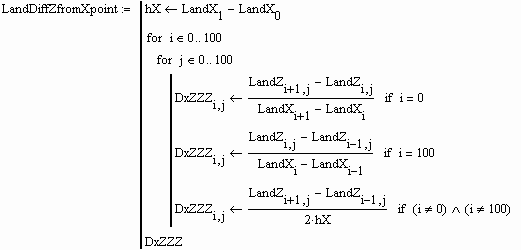 | |
| 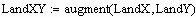 | После того, как массивы первых производных сформированы , по полученным значениям производится двумерная сплайн-интерполяция и моделируются поверхности 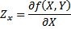 и 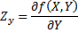 |
| 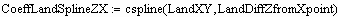 | 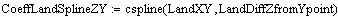 |
| 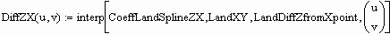 | 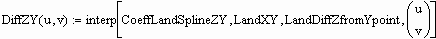 |
| 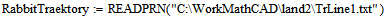 | Аналогичным образом формируется траектория движения "Кролика" (файл TrLine1.txt) |
| 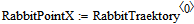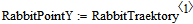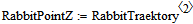 | |
| 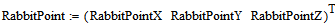 | |
| Аппликата траектории "Кролика" здесь равна 0 потому, что в дальнейшем произойдет присвоение 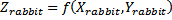 |
| Здесь вводится формальный параметр , где 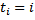( - порядковый номер введенных точек упорядоченного массива траектории движения "Кролика") | ||
| 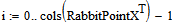 | ||